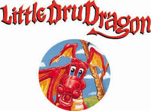

Trade Mark Journal No.2025/030 25 July 2025
UK00004234685 16 July 2025 (9,16,28,41,42)

- Class 9
- Animated cartoons; Cartoons (Animated -); Downloadable animated cartoons; Animated cartoons in the form of cinematographic films; Animated films; Downloadable comic strips; Video disks with recorded animated cartoons; Optical character readers; Readers (Optical character -); Video tapes with recorded animated cartoons; Prerecorded video cassettes featuring animated fictional stories; Character recognition software; 3D animation software; Intelligent Character Recognition [ICR] software; Animation software; Character verification instruments; Film strip viewers; Character recognition apparatus; Software for optical character recognition; Character verification apparatus; Optical Character Recognition [OCR] software; Movie film developing machines; Prerecorded video cassettes featuring cartoons; Motion picture films; Optical character recognition apparatus [OCR]; Pre-recorded motion picture films; Editing machines for movie films; Optical character recognition apparatus; Downloadable graphic design templates.
- Class 16
- Cartoon strips; Cartoon prints; Printed cartoon strips; Comic strips' comic features; Cartoon strips [printed matter]; Newspaper cartoons; Print characters; Caricatures; Manga comic books; Comics; Typographic characters; Animation cels; Comic strips; Newspaper comic strips; Printing characters; Comic books; Manga graphic novels; Printed comic strips; Comic strips [printed matter]; Comic magazines; Sketch books; Graphic drawings; Books featuring fictional stories; Graphic novels; Children's comics; Sketches; Series of computer game hint books; Books featuring fantasy stories; Graphic art books; Story books; Drawing books; Graphic prints and representations; Graphic art prints; Works of art and figurines of paper and cardboard, and architects' models; Drawing pencils; Computer game hint books; Printed stories in illustrated form; Picture books; Graphic prints.
- Class 28
- Fantasy character toys; Games relating to fictional characters; Rubber character toys; Plastic character toys; Mascot dolls; Toy action figurines; Toy action figures; European style dolls; Drawing toys; Novelty toys for playing jokes; Collectable toy figures; Toy figures; Toy environments for use with action figures; Toy figure playsets; Toy figurines; Modeled plastic toy figurines; Playsets for action figures.
- Class 41
- Creating animated cartoons; Production of animated cartoons; Entertainment services featuring fictional characters; Production of a continuous series of animated adventure shows; Production of animated motion pictures; Providing online non-downloadable comic books and graphic novels; Production of animation.
- Class 42
- Design of post card cartoon characters; Animation design for others; Animation and special-effects design for others; Graphic illustration design; Design of puppets; Toy design; Graphic art design; Design of artwork; Graphic design; Graphic illustration design services; Design of show scenery.
Gary Francis-Williams